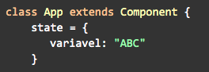
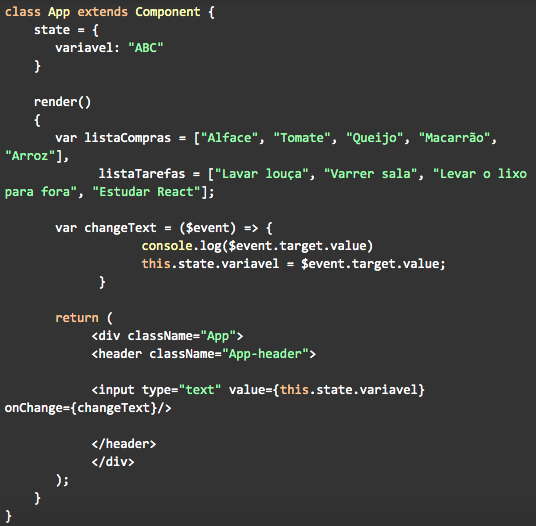
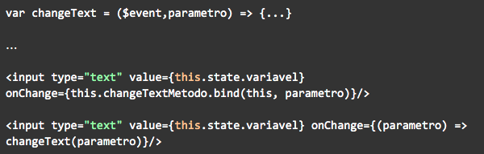
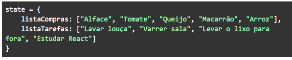
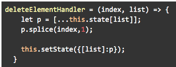
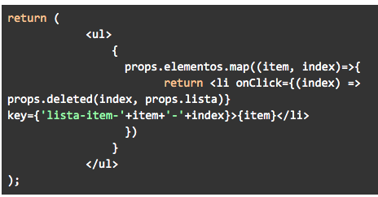

Por conta do modo como o React trata o ciclo de renderização dos componentes, não podemos simplesmente trocar o valor de uma variável atrelada a uma interação do usuário. Se por exemplo a gente tivesse um input: <input type="text" value={variavel}>, o que aconteceria se a gente digitasse algo?
O React detectaria a mudança, dispararia uma nova renderização e… nada! Isso porque ele foi instruído a setar o valor do input para a variável, mas não a configurar o valor dessa variável para o valor do input. Como faríamos isso, então? Podemos usar a palavra chave onChange que identifica o evento de mudança de valor e executa alguma função, que no nosso caso seria colocar o valor da variável igual ao do input.
❗ Obs.: Confira a lista dos eventos React aqui: https://pt-br.reactjs.org/docs/events.html
Então se fizéssemos algo como:

Tudo funcionaria, certo? Bom… não. O ponto aqui é que, como o React dispara renderizações dos lugares que sofreram mudanças ele precisa o tempo todo manter um controle sobre quais variáveis tem quais valores em quais momentos. Em outras palavras ele precisa sempre saber como uma variável está, ou o seu estado. E, para manter a consistência dos dados da aplicação (ou seja, evitar que tudo vire uma bagunça), o React permite apenas a interação com o estado das variáveis de uma única forma padronizada.
Para tanto, usamos uma propriedade especial da classe Component, chamada state. Repare, falamos que é da classe Component, certo? Isso quer dizer que, a priori, não conseguimos manipular estado em componentes funcionais. Essa é umas das maiores diferenças entre os dois. Tecnicamente, nós podemos usar estado nesses casos, mas usamos um outro recurso mais moderno do React: os chamados Hooks.
Definimos o state então como uma propriedade de nossa classe, mais especificamente um objeto:
Podemos acessar então as entradas deste estado com o this em outros lugares de nosso código:
Mas mesmo assim… ainda não funciona! Isso porque, ainda, não estamos usando o estado do modo como o React quer. Por motivos de segurança o React não reconhece alterações (chamadas também de "mutações") diretas no estado, como em: this.state.variavel = $event.target.value;. Para alterar o valor dessa entrada, precisamos usar um método específico: this.setState().
Esse é um método especial da classe Component que altera o valor do objeto state de maneira que o React reconheça. Como parâmetro passamos um novo objeto contendo as entradas que queremos alterar. Por exemplo.: this.setState({variavel: $event.target.value});. Esse método vai então mesclar os dois objetos, implementando nossas alterações, mas sem perder ou sobrescrever as demais propriedades do estado que não mencionamos. Se testarmos agora, veremos que, finalmente, nosso input funciona.
Pode parecer muito complicado para uma operação aparentemente tão simples, mas toda essa rigidez é necessária para o modo como o React interage com o DOM funcionar e, se você parar pra pensar, não é de todo ruim. Por te forçar a usar esses métodos, o React te instrui a controlar com mais cuidado suas variáveis e como o usuário interage com elas, o que pode prevenir muitos comportamentos errados em sua aplicação que seriam muito difíceis de debugar e identificar.
Outro detalhe importante: é uma boa prática usar o mínimo possível de componentes que manipulam estado. Isso é exatamente porque é muito fácil se perder na gerência do estado entre componentes se há múltiplos desses em uma única página. Se três dos nossos elementos podem observar uma variável imagina a bagunça que seria? Uma regra simples que podemos seguir é que componentes que descrevem uma página podem gerenciar estado, enquanto os demais componentes que a compõe não, se preocupando apenas em renderizar conteúdo de maneira "burra". Isso permite que sejam mais facilmente reutilizados e, de quebra, mantém nosso código mais claro.
Enquanto estamos nesse assunto, podemos abordar também sobre eventos. Vamos explicar então os métodos executados nos exemplos acima. De cara usamos o interpolador porque estamos usando uma expressão JS, certo? Mas, se estou usando uma função, por que não a declaro como funcao() ao invés de apenas funcao? Muito simples: quando escrevemos o primeiro estamos na verdade executando a função uma vez. Isso quer dizer que o React renderiza o elemento, executa a função e acabou. E toda vez que o evento disparar, ele vai quebrar, porque não consegue referenciar algo que já foi executado.
Quando enviamos apenas o nome do método (this.metodo) ou função, estamos na verdade enviando a referência do que queremos que o React execute toda vez. E por padrão o React já envia uma cópia do evento em si com o parâmetro, então não precisamos nos preocupar com isso. Mas e se quisermos enviar parâmetros? Temos alguns jeitos:
Ok, o que é tudo isso? No primeiro, atrelamos um método à estrutura geral usando uma função especial do React, o bind, e em seguida listamos os parâmetros dessa função. No segundo caso criamos uma função (arrow function) que recebe o parâmetro e executa a função com o parâmetro toda vez que o evento dispara. Como não definimos uma variável especial para o evento explicitamente, devemos assumir na declaração do método/função que o evento é sempre o primeiro parâmetro enviado. Desse modo conseguimos enviar referências de função com parâmetros sem precisar, necessariamente, declarar o evento.
Outra coisa importante é que podemos passar como propriedades não somente dados, mas também métodos. Por que isso seria importante? Lembra que alguns componentes não conseguem manipular estado? Como então podemos criar componentes interativos?
Devemos forçar gerência de estado em cada um? De jeito nenhum! O mais inteligente é manter o padrão que discutimos antes e, a partir do componente com estado, mandar os eventos que o manipulam como uma propriedade!
Seguindo nosso exemplo, e se quiséssemos clicar em itens da lista que completamos para apagá-lo? Primeiramente, teríamos que mover nossas variáveis para o state:
E criar um método para remover o elemento:
Agora basta enviar o último como uma propriedade <Lista lista="listaCompras" elementos={this.state.listaCompras} deleted={this.deleteElementHandler}/> e podemos agora usá-lo dentro de nosso componente. Se dentro dele fizermos:
E podemos atrelar o método com o evento onClick para, de dentro do nosso componente, afetar o estado do componente pai e eliminar um elemento da lista.
🔎 Fonte e/ou material complementar:
Você também encontra mais informações na documentação oficial do React: https://pt-br.reactjs.org/docs/state-and-lifecycle.html